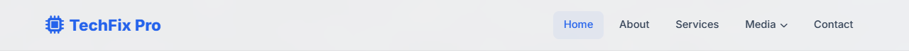
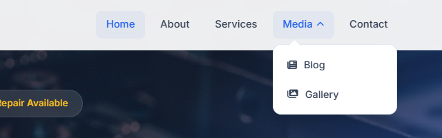

Lesson 7 · Shared Styles & Layout
The Navigation Bar
The navbar sits at the top of every page: the TechFix Pro logo on the left, the menu on the right, and a “Media” dropdown that reveals Blog and Gallery. It stays fixed while you scroll. This is the most important shared component, so we will build it carefully.
- About 75 minutes
- Edits: all 6 HTML pages,
styles.css

By the end of this lesson you will be able to
- Build a menu from an unordered list of links.
- Lay out a bar with flexbox (
justify-content: space-between). - Fix an element to the top of the screen with
position: fixedandz-index. - Create a hover dropdown with
position: absolute,opacityandvisibility. - Mark the current page with an
activeclass.
Part A — The HTML
Add the nav and the logo
Open index.html. Click at the end of the <body> line, press Enter, and type this above <!-- PAGE CONTENT GOES HERE -->:
<body><!-- Navbar -->
<nav class="navbar">
<div class="nav-container">
<a href="index.html" class="logo">
<i class="fas fa-microchip"></i>
TechFix Pro
</a>
</div>
</nav><nav>tells browsers and screen readers “this is the main navigation”..nav-containeris an inner box that will keep the logo and menu within 1200px, just like.container.- The logo is a link (
<a>) back to the home page containing an icon and text.
Add the menu links
Click at the end of the logo's closing </a> line, press Enter, and add the menu. It goes inside .nav-container, after the logo:
</a>, still inside <div class="nav-container"><ul class="nav-links">
<li><a href="index.html" class="active">Home</a></li>
<li><a href="about.html">About</a></li>
<li><a href="services.html">Services</a></li>
<li><a href="contact.html">Contact</a></li>
</ul>Menus are written as a list (<ul>) of links because a menu is a list of choices. The href values are relative paths: about.html means “the file called about.html in the same folder as this page”.
The class="active" on “Home” will highlight it in blue, telling visitors which page they are on.
Add the Media dropdown
Between the Services line and the Contact line, add a list item that contains a second list:
<li> and the Contact <li><li class="dropdown">
<a href="#" class="dropdown-toggle">
Media
<i class="fas fa-chevron-down"></i>
</a>
<ul class="dropdown-menu">
<li><a href="blog.html"><i class="fas fa-newspaper"></i> Blog</a></li>
<li><a href="gallery.html"><i class="fas fa-images"></i> Gallery</a></li>
</ul>
</li>- The outer
<li class="dropdown">holds both the “Media” link and the hidden sub-menu. href="#"is a link to “nowhere” — the Media item only opens the sub-menu.fa-chevron-downis the little down-arrow. It will flip upside down when the menu opens.
Add the (hidden) mobile menu button
On phones the menu will collapse behind a “hamburger” button (☰). We will make it work in Lesson 9, but the HTML goes in now. Add these lines between the logo's </a> and <ul class="nav-links">:
</a>, before <ul class="nav-links"><input type="checkbox" id="menu-toggle" class="menu-toggle">
<label for="menu-toggle" class="mobile-menu-btn" aria-label="Toggle menu">
<i class="fas fa-bars"></i>
</label>This is a checkbox (which will be invisible) and a label showing the ☰ icon. Clicking a label ticks or unticks the checkbox it points to (for="menu-toggle" matches id="menu-toggle"). In Lesson 9, CSS will show the menu whenever the checkbox is ticked. It's a clever way to make a menu button without JavaScript.
Check the complete navbar HTML
Your whole navbar in index.html should now look exactly like this:
<body>)<!-- Navbar -->
<nav class="navbar">
<div class="nav-container">
<a href="index.html" class="logo">
<i class="fas fa-microchip"></i>
TechFix Pro
</a>
<input type="checkbox" id="menu-toggle" class="menu-toggle">
<label for="menu-toggle" class="mobile-menu-btn" aria-label="Toggle menu">
<i class="fas fa-bars"></i>
</label>
<ul class="nav-links">
<li><a href="index.html" class="active">Home</a></li>
<li><a href="about.html">About</a></li>
<li><a href="services.html">Services</a></li>
<li class="dropdown">
<a href="#" class="dropdown-toggle">
Media
<i class="fas fa-chevron-down"></i>
</a>
<ul class="dropdown-menu">
<li><a href="blog.html"><i class="fas fa-newspaper"></i> Blog</a></li>
<li><a href="gallery.html"><i class="fas fa-images"></i> Gallery</a></li>
</ul>
</li>
<li><a href="contact.html">Contact</a></li>
</ul>
</div>
</nav>Save and look at the page. It looks like a plain list with a checkbox. That's expected, because nothing is styled yet.
Part B — The CSS
Style the bar, logo and links
Add at the bottom of styles.css:
styles.css/* ============================================
Navbar
============================================ */
.navbar {
position: fixed;
top: 0; left: 0; right: 0;
background: rgba(255,255,255,0.92);
backdrop-filter: blur(12px);
-webkit-backdrop-filter: blur(12px);
z-index: 1000;
border-bottom: 1px solid rgba(0,0,0,0.05);
transition: var(--transition);
}
.nav-container {
max-width: 1200px;
margin: 0 auto;
padding: 0 1.5rem;
display: flex;
justify-content: space-between;
align-items: center;
height: 72px;
}
.logo {
font-size: 1.4rem;
font-weight: 800;
color: var(--primary);
display: flex;
align-items: center;
gap: 0.5rem;
}
.logo i { font-size: 1.6rem; }
.nav-links {
display: flex;
list-style: none;
gap: 0.5rem;
align-items: center;
}
.nav-links > li { position: relative; }
.nav-links a {
display: flex;
align-items: center;
gap: 0.35rem;
color: var(--dark-gray);
font-weight: 500;
font-size: 0.92rem;
padding: 0.5rem 0.9rem;
border-radius: var(--radius-sm);
transition: var(--transition);
}
.nav-links a:hover,
.nav-links a.active {
color: var(--primary);
background: rgba(37, 99, 235, 0.06);
}What's new here
position: fixed; top: 0; left: 0; right: 0;— glues the navbar to the top of the browser window. It stays there while the page scrolls underneath.z-index: 1000— elements can overlap; a higherz-indexis drawn on top. 1000 makes sure the navbar covers everything else.rgba(255,255,255,0.92)+backdrop-filter: blur(12px)— a 92% white background that blurs whatever scrolls behind it (a “frosted glass” look).-webkit-backdrop-filteris the same thing for Safari.display: flexon.nav-container— turns on flexbox: its children (logo, button, menu) are placed in a row.justify-content: space-betweenpushes the first child to the left edge and the last to the right.align-items: centercentres them vertically in the 72px-high bar..nav-links { display: flex; list-style: none; }— puts the menu items side by side and removes the bullet points..nav-links a:hover, .nav-links a.active— one rule for two situations: hovering a link and the current page's link both get blue text and a faint blue background.
New term: Flexbox
Flexbox (display: flex) is a layout tool for arranging items in a row or column. The parent controls the layout: justify-content spreads items along the row, align-items lines them up across it, and gap sets the space between them. You will use it constantly.
Style the dropdown
Add at the bottom of styles.css:
styles.css/* Dropdown */
.dropdown-menu {
position: absolute;
top: calc(100% + 8px);
left: 0;
background: var(--white);
border-radius: var(--radius);
box-shadow: var(--shadow-lg);
min-width: 180px;
padding: 0.5rem 0;
opacity: 0;
visibility: hidden;
transform: translateY(-8px);
transition: var(--transition);
border: 1px solid var(--border);
list-style: none;
}
.dropdown-menu::before {
content: '';
position: absolute;
top: -6px;
left: 24px;
width: 12px;
height: 12px;
background: var(--white);
transform: rotate(45deg);
border-left: 1px solid var(--border);
border-top: 1px solid var(--border);
}
.dropdown:hover .dropdown-menu,
.dropdown:focus-within .dropdown-menu {
opacity: 1;
visibility: visible;
transform: translateY(0);
}
.dropdown-menu a {
padding: 0.6rem 1.25rem;
font-size: 0.9rem;
border-radius: 0;
display: flex;
align-items: center;
gap: 0.6rem;
}
.dropdown-menu a:hover {
background: var(--light);
padding-left: 1.5rem;
}
.dropdown-toggle i.fa-chevron-down {
font-size: 0.7rem;
transition: transform 0.3s ease;
}
.dropdown:hover .dropdown-toggle i.fa-chevron-down,
.dropdown:focus-within .dropdown-toggle i.fa-chevron-down {
transform: rotate(180deg);
}How the dropdown works
- Earlier you gave
.nav-links > liposition: relative. That makes each menu item the reference point for anything inside it that is absolutely positioned. .dropdown-menuhasposition: absolutewithtop: calc(100% + 8px): it is lifted out of the normal flow and placed 8px below the “Media” item.calc()lets CSS do maths.- It starts invisible:
opacity: 0(fully transparent) andvisibility: hidden(can't be clicked), nudged up 8px withtransform. .dropdown:hover .dropdown-menu— when the mouse is over the Media item, the sub-menu becomes visible and slides down into place. Because oftransition, it fades in smoothly..dropdown:focus-withindoes the same when someone uses the Tab key to reach the menu, so keyboard users can open it too..dropdown-menu::beforecreates a small square, rotated 45° with only two borders. That's the little pointer arrow at the top of the dropdown.content: ''is required for::beforeto appear at all.

Hide the mobile button on large screens
Add at the bottom of styles.css:
styles.css/* Mobile menu button (CSS-only: a hidden checkbox + its label) */
.menu-toggle {
display: none;
}
.mobile-menu-btn {
display: none;
background: none;
border: none;
font-size: 1.4rem;
color: var(--secondary);
cursor: pointer;
padding: 0.5rem;
}The checkbox is always hidden (display: none). The hamburger label is hidden too for now. In Lesson 9 you will show it on small screens only.
Check the Home page
Save everything and look at index.html. You should see the white bar across the top with the logo on the left and the menu on the right, with “Home” highlighted. Hover over “Media” to open the dropdown.
Why is the page empty under the navbar?
Because the page has no content yet! The navbar is fixed, so it floats; it doesn't take up space. Every page's first section has extra top padding to make room for it. You'll see that in Lessons 10 and 14.
Copy the navbar to the other five pages
Every page needs the same navbar. In index.html, select from <!-- Navbar --> down to </nav> and copy it. Then open each other page and paste it directly after <body>, above <!-- PAGE CONTENT GOES HERE -->.
Then move the active class so each page highlights itself:
| Page | Remove class="active" from Home and put it on… |
|---|---|
about.html | <a href="about.html" class="active">About</a> |
services.html | <a href="services.html" class="active">Services</a> |
blog.html | the Media toggle: <a href="#" class="dropdown-toggle active"> |
gallery.html | the Media toggle: <a href="#" class="dropdown-toggle active"> |
contact.html | <a href="contact.html" class="active">Contact</a> |
Blog and Gallery live inside the Media menu, so on those pages the Media item is highlighted. Notice how class="dropdown-toggle active" gives one element two classes, separated by a space.
Show the complete navbar for blog.html
<!-- Navbar -->
<nav class="navbar">
<div class="nav-container">
<a href="index.html" class="logo">
<i class="fas fa-microchip"></i>
TechFix Pro
</a>
<input type="checkbox" id="menu-toggle" class="menu-toggle">
<label for="menu-toggle" class="mobile-menu-btn" aria-label="Toggle menu">
<i class="fas fa-bars"></i>
</label>
<ul class="nav-links">
<li><a href="index.html">Home</a></li>
<li><a href="about.html">About</a></li>
<li><a href="services.html">Services</a></li>
<li class="dropdown">
<a href="#" class="dropdown-toggle active">
Media
<i class="fas fa-chevron-down"></i>
</a>
<ul class="dropdown-menu">
<li><a href="blog.html"><i class="fas fa-newspaper"></i> Blog</a></li>
<li><a href="gallery.html"><i class="fas fa-images"></i> Gallery</a></li>
</ul>
</li>
<li><a href="contact.html">Contact</a></li>
</ul>
</div>
</nav>Checkpoint
Common mistakes
- Menu items are stacked vertically with bullets: the
.nav-linksrule isn't applying. Checkclass="nav-links"on the<ul>. - The dropdown appears at the far left of the screen: you're missing
.nav-links > li { position: relative; }. - The dropdown disappears before I can click it: make sure the sub-menu
<ul>is inside<li class="dropdown">, not after it. - A link opens a “file not found” page: check the spelling of the
hrefand the file name (e.g.services.html, notservice.html).